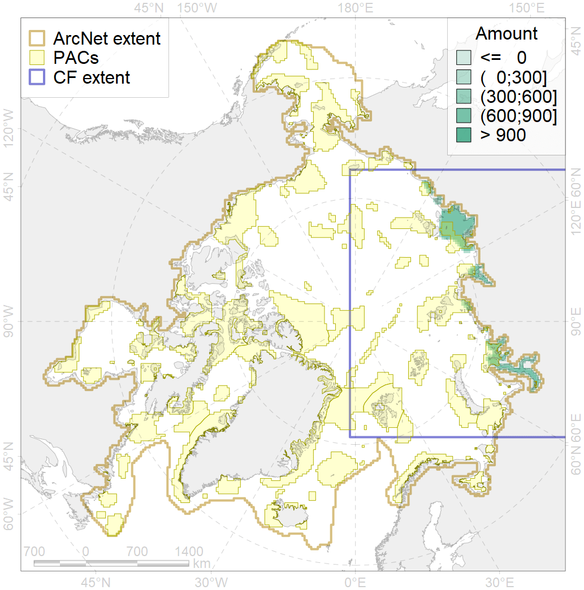
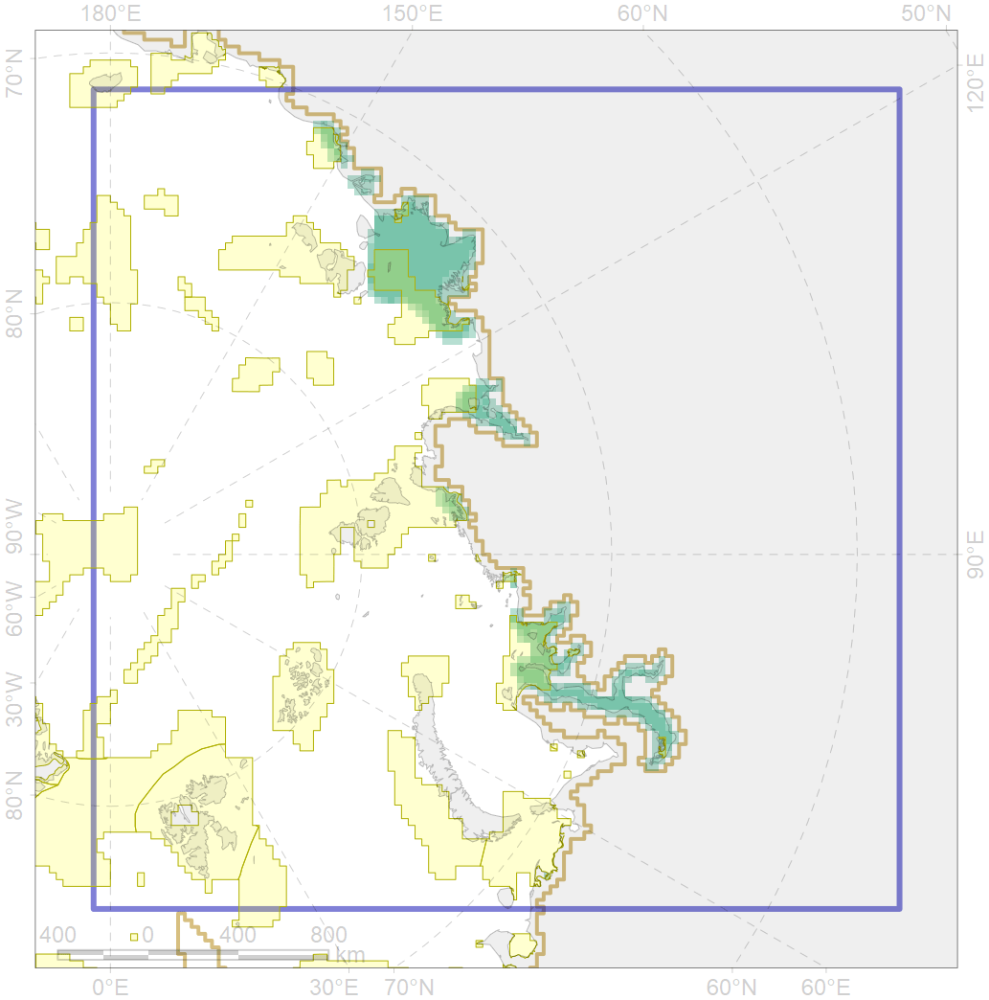

4061

| CF code | 4061 |
| CF name | Feeding/nursery area of the Siberian sturgeon (Acipenser baerii) |
| Time Period | 1940s-2010s |
| Source(s) | Chernova, 2011 |
| Seasonality | Jan-Dec |
| Depth Horizon | coastal waters, lower limits unknown |
| Methodology | Compiled from literature sources based on field observations |
| Use Restrictions | Open access |
| Author Name | N. Chernova |
| Notes | Chernova (2011) compiled the data of: Dryagin, 1948; Andriashev, 1954; Podlesnyi, 1955; Walters,1955; Kozhin, 1949; Rutilevskii, 1970; Solovkina, 1975; Ruban, Panaiotidi, 1994; Ruban, Sokolov in: Atlas…, 2002; Zakharov et al.,2007; Chereshnev, 2008 |
| Scenario’s Target | 0.372 |
| Target Achievement | 0.371 (Scenario: 99.7%) |
| PAC | Share of the Total Amount within the PAC | Share of the Target Achievement for the ArcNet | PAC’s Contribution to the Target Achievement |
|---|---|---|---|
| 10 | 2.0%2.0% | 4.6%4.7% | 4.6%4.6% |
| 12 | 18.9%19.1% | 44.5%44.9% | 44.4%44.8% |
| 13 | 1.8%1.8% | 4.1%4.2% | 4.1%4.2% |
| 14 | 1.6%1.6% | 4.2%4.3% | 4.2%4.3% |
| 15 | 0.1%0.2% | 0.4%0.5% | 0.4%0.5% |
| 16 | 10.5%11.5% | 26.7%28.4% | 26.6%28.3% |
| 17 | 0.2%0.4% | 0.4%0.9% | 0.4%0.9% |
| 20 | 0.0%0.0% | 0.0%0.0% | 0.0%0.0% |
| inner | 35.1%36.7% | 84.8%87.8% | 84.7%87.6% |
| outer | 63.8%76.0% | 14.8%41.1% | 14.8%41.0% |
| † supplement values are for area consistence whereas principal values are for Accenter compatible gridded stats |